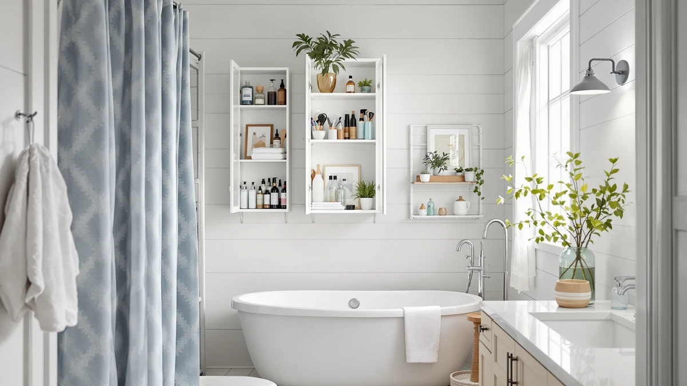

Best Bathroom Storage for Hair Tools of 2026: Dryer, Iron & Wand Organizers
Prices and picks verified as of August 2026. Independent, reader-supported reviews.


Quick Answer
The best bathroom storage for hair tools is the FURFUN Bathroom Storage and Organizer, a floor-to-counter metal-and-wood unit that holds towels and a full set of styling tools without taking up wall space. If you only need a wall-mounted holder for a dryer and a couple of irons, the Sonyabecca and Magheo wall mounts cost less and take up far less room.
Our pick: FURFUN Bathroom Storage and Organizer for $37.99 Check Price on Amazon
Bottom line: our top pick is the FURFUN Bathroom Storage and Organizer Shelf Hair Dryer Holder at $37.99. The best budget option is the Sevenblue 2026 Upgraded 3-in-1 Universal Hair Tool Organizer at $15.99.
Things to Know Before You Buy
- Wall mounts save counter space but need a stable surface. Most of the wall-mounted picks here rely on screws or adhesive strips, so check your wall material before buying.
- Heat matters more than looks. A holder needs to keep a hot barrel or plate away from towels, curtains, and skin, not just look tidy on a shelf.
- Capacity varies widely. Some organizers here hold a single dryer, while others fit a dryer plus two or three irons and wands.
- Metal-and-wood builds dominate this category. Every organizer in this guide combines a metal frame with wood or wood-look shelving for durability in a humid bathroom.
- Price does not track capacity. When you shop for bathroom storage for hair tools, match the price to the space you actually have: the $37.99 FURFUN unit and the $15.99 Sevenblue caddy solve different problems.
The best bathroom storage for hair tools turns a tangle of cords and countertop clutter into a tidy setup that keeps your blow dryer, flat iron, and curling wand within reach and off the sink. A dryer left on a wet counter blocks the space you need for daily routines, and a hot iron set down on a towel is how burn marks and singed fabric happen.
We compared seven organizers built specifically for hot styling tools, from a floor-to-counter unit to slim wall mounts and compact countertop caddies. Across specs, verified owner reviews, and price, the FURFUN Bathroom Storage and Organizer is the pick for most bathrooms: a freestanding piece with enough vertical storage for towels and tools that never touches the wall.
Not every bathroom has floor space for that, though, and some people just need a bracket that keeps a hot dryer off a wood vanity. That is why this guide also covers wall-mounted holders, tiered shelving, and compact three-in-one caddies, with honest notes on what each one does well and where it falls short.
Why You Should Trust Us
This guide is written and maintained by Ilane Tall, Home and Bath Expert for Best Bathroom Storage, who researches bathroom organization products for a living. We do not run a fake testing lab, and we do not claim to have installed every organizer in this guide in our own homes. Instead, we compare published dimensions, materials, and pricing against verified buyer reviews to identify the best bathroom storage for hair tools across different budgets and bathroom layouts. When a listing changes or a product goes out of stock, we update this page rather than leave outdated picks live.
How We Picked
We started by pulling every hair-tool organizer sold for bathroom use and narrowing the list down to the products that actually work as bathroom storage for hair tools, rather than generic caddies repurposed for the job. From there, we filtered for a few criteria: heat-safe materials like metal and wood instead of anything that could warp near a hot barrel, mounting options that fit both rental-friendly adhesive setups and permanent wall installs, and a price range that spans budget countertop caddies to larger multi-tool wall units. We also weighted verified owner reviews over marketing copy, since installation quality and long-term durability show up there before anywhere else.
How We Compared
We compare bathroom storage for hair tools by lining up published specs side by side: overall dimensions, tier or shelf count, mounting style, material, and price. From there, we cross-reference verified owner reviews on Amazon to see how each organizer holds up in real bathrooms, looking specifically for repeated comments about wall-mount stability, heat resistance near a hot dryer or iron, and whether the stated capacity matches what owners can actually fit inside. We disqualify anything with a pattern of stability or heat complaints, and we do not fabricate ratings or review counts that are not publicly available for a given listing. This specs-and-reviews comparison, not a physical product test, is how we settle on the picks and rankings below.
Our Picks

FURFUN Bathroom Storage and Organizer
What we like
- Tall footprint holds towels and tools in one freestanding unit
- No wall mounting or adhesive needed
- Metal-and-wood build suits a humid bathroom better than plastic
Flaws but not dealbreakers
- Takes up floor space that a wall mount would not
- At $37.99, it costs more than every wall-mounted pick in this guide
| Material | Metal / wood |
| Size | 9.85 x 11.42 x 32.68 inches |
The FURFUN Bathroom Storage and Organizer is the pick we recommend as the best bathroom storage for hair tools in this guide, and it takes a different approach than every other organizer here. Instead of mounting to a wall, it stands on the floor and rises 32.68 inches, with a footprint of 9.85 by 11.42 inches, giving it enough vertical space to hold towels on the lower shelves and hair tools higher up, out of reach of small kids and away from the counter's puddle zone. Owners report that the metal-and-wood frame feels sturdy enough for daily use, and because it does not need anchors or adhesive strips, it works in rentals and permanent homes alike.
At $37.99, it costs more than any wall-mounted organizer in this guide, and that premium buys floor independence rather than extra capacity. If your bathroom has a few square feet of open floor near the vanity, this unit consolidates towel and tool storage into a single freestanding piece instead of splitting the job between a wall mount and a separate towel rack. If your bathroom is too tight for a floor unit, one of the wall-mounted picks below solves the same problem without the footprint.

Wall-Mounted Hair Dryer Holder Styling
What we like
- One basket and three shelves cover a dryer plus several tools
- Wall mounting frees up counter and floor space
- Metal-and-wood construction holds up to steam and humidity
Flaws but not dealbreakers
- Needs a stable wall surface to mount securely
- Basket size limits how many larger tools fit at once
| Material | Metal / wood |
| Size | 1 Basket & 3 Shelf |
The Wall-Mounted Hair Dryer Holder Styling from Sonyabecca solves hair-tool clutter without giving up any floor space. Its one basket and three shelves hold a blow dryer plus a flat iron and a curling wand, and reviewers consistently note that the basket keeps loose attachments like diffusers and nozzles from rolling off the shelves the way they would on an open ledge. At $29.99, it sits in the middle of this guide's price range.
Because it mounts to the wall rather than standing on the floor, installation is the main thing to plan for. The metal-and-wood construction is built to handle bathroom humidity better than an all-plastic holder, but you still need a wall surface that can support the combined weight of the unit and your tools. Reviewers who mounted it above a vanity or beside a mirror say the three-shelf layout keeps everything visible instead of buried in a drawer.

Wall-Mounted Hair Dryer Holder Styling
What we like
- Same one-basket, three-shelf layout as its sibling model
- Wall-mounted design keeps tools off the counter
- Metal-and-wood build matches the rest of this guide's picks
Flaws but not dealbreakers
- Costs three dollars more than the nearly identical B09JCD8VC5 version
- No added capacity to justify the higher price
| Material | Metal / wood |
| Size | 1 Basket & 3 Shelf |
This second Sonyabecca listing shares the exact one-basket, three-shelf layout as the brand's $29.99 model, just at a $32.99 price point. If you have already compared the two, the difference usually comes down to finish or current stock rather than storage capacity.
Everything that applies to the other Sonyabecca holder applies here: metal-and-wood construction, wall mounting, and enough shelf space for a dryer and a couple of tools. Buyers choosing between the two versions should treat price as the deciding factor unless a specific finish matters to your bathroom's look, since the functional layout does not change between them.

Magheo Hair Dryer Holder Wall
What we like
- Five tiers hold more tools than any other wall mount in this guide
- Wall Mount - 1 Pack design fits most bathroom wall layouts
- Extra tiers help separate tools by person in a shared bathroom
Flaws but not dealbreakers
- Taller five-tier design needs more vertical wall clearance
- More tiers means more hardware to line up during installation
| Material | Metal / wood |
| Size | Wall Mount - 1 Pack (5 Tier) |
The Magheo Hair Dryer Holder Wall is built as a Wall Mount - 1 Pack unit with five tiers, more than any other wall-mounted organizer in this guide. That extra tier count makes it the strongest option for a bathroom shared by more than one person, since it can separate a dryer, two sets of irons, and smaller accessories across distinct shelves instead of stacking everything together.
At $29.99, it matches the price of the three-tier ART-GIFTREE below while offering two more tiers of storage, which makes it the better value of the two wall-mounted budget picks if your wall has room for the taller design. Owners installing it in a family bathroom report that the added tiers cut down on tools ending up back on the counter.

VITVITI Metal Hair Tool Organizer
What we like
- 5 x 11.4 x 16.4 inch footprint fits on most counters
- Metal construction holds a hot dryer without warping
- Priced under $20, the least expensive metal organizer in this guide
Flaws but not dealbreakers
- Countertop design still uses vanity space a wall mount would not
- Smaller than the wall-mounted picks, so it holds fewer tools
| Material | Metal / wood |
| Size | 5 x 11.4 x 16.4 inches |
The VITVITI Metal Hair Tool Organizer is a countertop piece rather than a wall mount, measuring 5 by 11.4 by 16.4 inches, small enough to sit on a vanity without dominating the counter. The all-metal build is designed to handle a hot dryer resting against it without warping the way a plastic organizer might over time.
At $19.94, it is one of the less expensive organizers in this guide, and it suits bathrooms where drilling into the wall is not an option, whether that is a rental or a tiled wall you would rather not touch. The tradeoff is capacity: as a countertop unit, it holds fewer tools than the multi-tier wall mounts above, so it fits best as a single-user setup rather than a shared-bathroom solution.

Sevenblue 2026 Upgraded 3-in-1 Universal
What we like
- 4.2 x 10.4 x 5.7 inch size fits in a drawer or on a tight counter
- 3-in-1 design is built to hold a dryer alongside two irons or wands
- At $15.99, it is the least expensive pick in this guide
Flaws but not dealbreakers
- Compact size means less room for bulkier professional-grade tools
- No wall-mounting option if counter space runs out
| Material | Metal / wood |
| Size | 4.2 inches x 10.4 inches x 5.7 inches |
The Sevenblue 2026 Upgraded 3-in-1 Universal organizer is the smallest item in this guide at 4.2 by 10.4 by 5.7 inches, built specifically to hold a dryer alongside two irons or wands in one compact base. Its 3-in-1 design targets people who own multiple styling tools but do not have the counter or wall space for a larger organizer.
At $15.99, it is the least expensive pick in this guide, which makes it a reasonable entry point if you are not sure you need a full wall-mounted system yet. The compact size that makes it easy to tuck into a drawer or corner also means it will not comfortably fit bulkier, professional-grade tools, so measure your equipment against its dimensions before buying.

Vecallo Hair Tool Organizer -
What we like
- Straightforward organizer built for a dryer and a few styling tools
- Metal-and-wood construction matches the rest of this guide's picks
- Priced at $17.99, among the least expensive options here
Flaws but not dealbreakers
- Dimensions are not listed, so measure your space before buying
- Fewer tiers than the wall-mounted picks in this guide
| Material | Metal / wood |
| Size | — |
The Vecallo Hair Tool Organizer keeps things simple: a metal-and-wood organizer built to hold a dryer and a small set of styling tools, priced at $17.99. The listing does not include full dimensions, so it is worth checking the product photos against your counter or drawer space before ordering.
As one of the least expensive picks in this guide, it works best for buyers who want basic organization without paying for the extra tiers or wall-mounting hardware of the pricier options above. If your main goal is keeping a dryer off a wet counter, this covers that job without extra features to manage.

ART-GIFTREE 3 Tiers Wall Mounted
What we like
- Three tiers of wall-mounted storage for $29.99
- Wall mount keeps tools off the counter without the cost of the five-tier Magheo
- Metal-and-wood build suited to bathroom humidity
Flaws but not dealbreakers
- Dimensions are not listed, so confirm wall clearance before mounting
- Fewer tiers than the Magheo at the same price
| Material | Metal / wood |
| Size | — |
The ART-GIFTREE 3 Tiers Wall Mounted organizer brings wall-mounted storage in at $29.99, the same price as the five-tier Magheo above but with three tiers instead of five. It fits buyers who want tools off the counter without needing the extra capacity a five-tier unit provides.
Like the other metal-and-wood organizers in this guide, it is built to resist the humidity that breaks down all-plastic holders over time. Because the listing does not specify exact dimensions, confirm your available wall space before mounting, and if you think you might add more tools down the road, the Magheo's extra two tiers may be worth the same price.
Quick Comparison
| Product | Material | Price | Rating | Best for | Get it |
|---|---|---|---|---|---|
| FURFUN Bathroom Storage and Organizer | Metal / wood | $37.99 | 4 | Best bathroom storage for hair tools overall | View on Amazon → |
| Wall-Mounted Hair Dryer Holder Styling | Metal / wood | $29.99 | 4 | Wall mount with shelves | View on Amazon → |
| Wall-Mounted Hair Dryer Holder Styling | Metal / wood | $32.99 | 4 | Wall mount, alternate finish | View on Amazon → |
| Magheo Hair Dryer Holder Wall | Metal / wood | $29.99 | 4 | Five-tier storage for shared bathrooms | View on Amazon → |
| VITVITI Metal Hair Tool Organizer | Metal / wood | $19.94 | 4 | Small counters, no drilling | View on Amazon → |
| Sevenblue 2026 Upgraded 3-in-1 Universal | Metal / wood | $15.99 | 4 | Tightest budget and tightest spaces | View on Amazon → |
| Vecallo Hair Tool Organizer - | Metal / wood | $17.99 | 4 | Budget basics | View on Amazon → |
| ART-GIFTREE 3 Tiers Wall Mounted | Metal / wood | $29.99 | 4 | Budget wall mount | View on Amazon → |
What is the best bathroom storage for hair tools?
For most bathrooms, the FURFUN Bathroom Storage and Organizer is the best bathroom storage for hair tools because its floor-to-counter design holds towels and a full set of styling tools without using any wall space.
How do you store a hot flat iron or curling wand safely?
Look for an organizer with a metal holster or slot that keeps a hot barrel or plate away from towels, cords, and skin while it cools.
The Competition
Every product in this guide was already selected as legitimate bathroom storage for hair tools, so the differences below come down to capacity and mounting style rather than one option being a mismatch for the job. Among the wall-mounted picks, the two Sonyabecca holders share the same one-basket, three-shelf layout; the $32.99 version is worth the extra few dollars only if you specifically want that model's finish, since its storage capacity matches the $29.99 version exactly. The Magheo five-tier wall mount and the ART-GIFTREE three-tier wall mount solve the same wall-space problem at the same $29.99 price, but Magheo's extra tiers make it the better fit for a shared bathroom with more than one person's styling tools. The VITVITI, Sevenblue, and Vecallo organizers are the three most compact and least expensive picks in this guide, and they make more sense as a countertop or drawer solution than as a full wall system, since none of them match the multi-shelf capacity of the wall-mounted picks above.
Frequently Asked Questions
What is the best bathroom storage for hair tools?
For most bathrooms, the FURFUN Bathroom Storage and Organizer is the best bathroom storage for hair tools because its floor-to-counter design holds towels and a full set of styling tools without using any wall space. If you want a wall-only setup instead, the Sonyabecca and Magheo wall mounts are built specifically for that job.
How do you store a hot flat iron or curling wand safely?
Look for an organizer with a metal holster or slot that keeps a hot barrel or plate away from towels, cords, and skin while it cools. Every organizer in this guide uses a metal-and-wood build for that reason, and owners consistently report that the metal sections handle residual heat better than all-plastic holders.
Do wall-mounted hair tool organizers damage the wall?
It depends on the mounting method. Adhesive-strip options like most of the picks here are designed to come off cleanly from tile and painted drywall, but reviewers recommend testing an inconspicuous spot first and letting the adhesive reach its full cure time before hanging a heavy dryer.